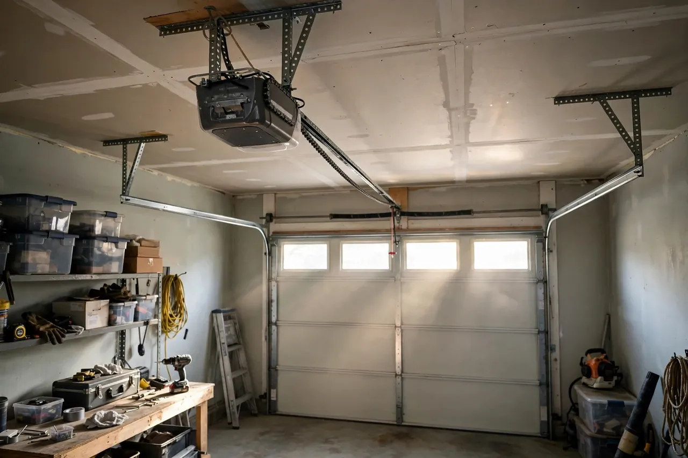
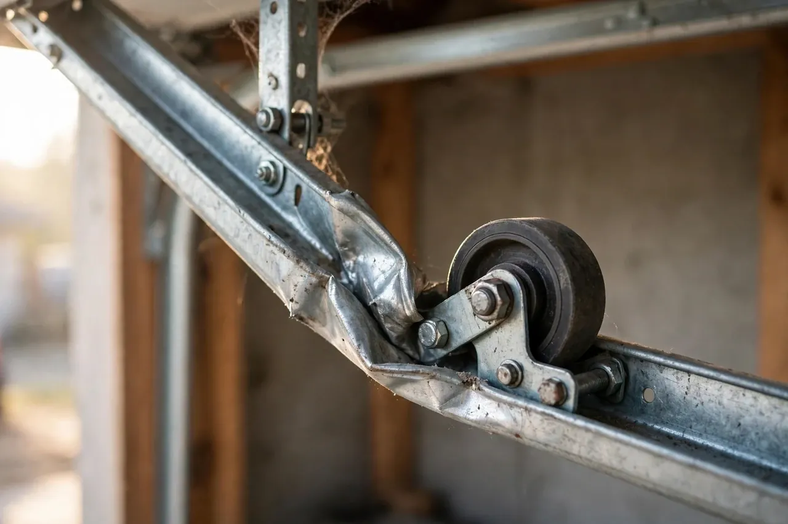
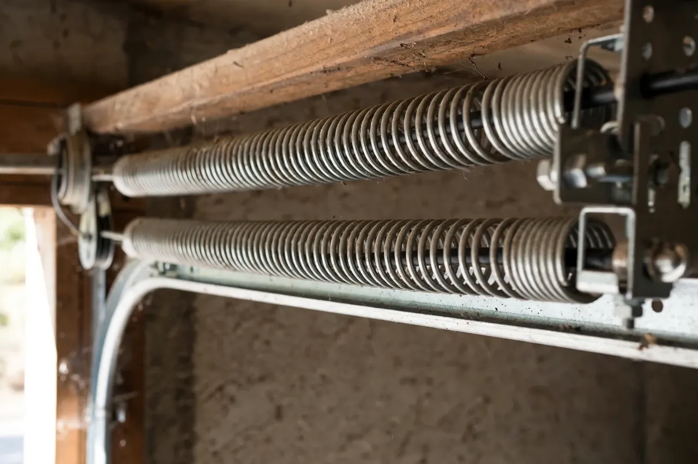
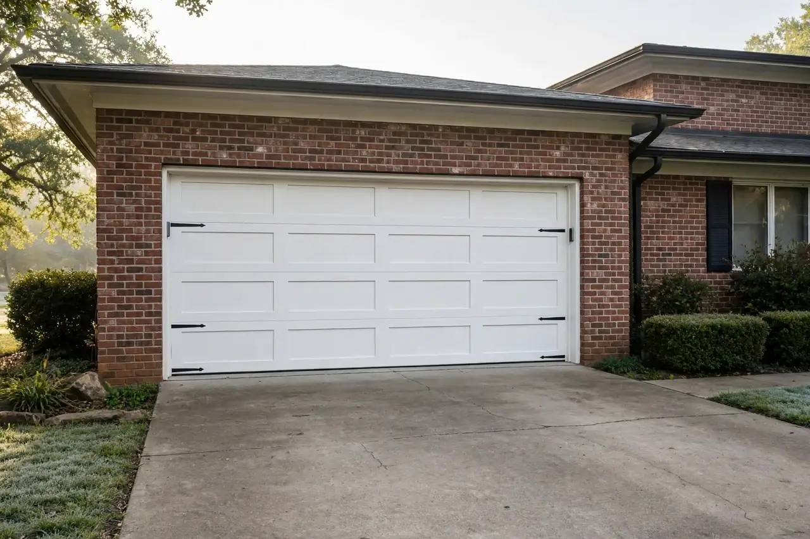

Repair Tips
Why is my garage door making a grinding noise
Rollers, tracks, opener wear, and balance causes. How to pinpoint a grinding noise safely and when to call a technician.
Read the guide
Straightforward advice for spotting problems early, understanding your options, and planning garage door work in Zion, Illinois.
Local service journal
Rollers, tracks, opener wear, and balance causes. How to pinpoint a grinding noise safely and when to call a technician.
Read the guide
The right parts, the right lubricant, what to skip, and how often. General guidance for lubricating rollers and hinges in Zion.
Read the guide
What garage door repairs cost, from dated national guides only. Springs, cables, openers, panels, and tracks, each labeled with source and scope.
Read the guide
The licence position, permit questions, written scope, reviews, and red flags. A practical hiring checklist for Zion homeowners.
Read the guide
Lubrication, sealing, safety tests, and the habits that prevent a frozen door. Winter preparation for Zion garage doors.
Read the guide
A garage door off its track is a stop-and-call situation. Causes, warning signs, and why re-railing belongs to a technician.
Read the guide
General pairing guidance for garage door remotes, what varies by opener, and fixes when pairing fails. No brand or model instructions.
Read the guide
Repair or replace a garage door opener? Lifespan, warning signs, safety features, and national guide ranges to help weigh the choice.
Read the guide
Springs carry the weight of your garage door and fail by design after a set number of cycles. How they work, break signs, and national guide ranges.
Read the guide
A blinking or misaligned sensor stops the door closing. Cleaning, alignment, and wiring checks, plus the safety rules and when to call a technician.
Read the guide
A garage door upkeep checklist for Zion homeowners: monthly looks, seasonal checks, safety tests, and the jobs that belong to a technician.
Read the guide
R-value guidance, polystyrene vs polyurethane, retrofit kits vs pre-insulated doors, and the whole-garage caveat for Zion homeowners.
Read the guide
Panel replacement costs explained with dated national guide ranges, each labeled with source and scope. Panel vs full door, matching, and cost drivers.
Read the guide
Battery, programming, range, lock mode, and opener checks in order, plus when the fault is the opener and not the remote.
Read the guide
Bottom seals, weatherstripping, threshold gaps, and testing. How to seal a garage door for winter in Zion.
Read the guideYour next step is waiting
Milwaukee Garage Doors Inc is open 24 hours, every day. Call (224) 842-7761 and describe what your door is doing.